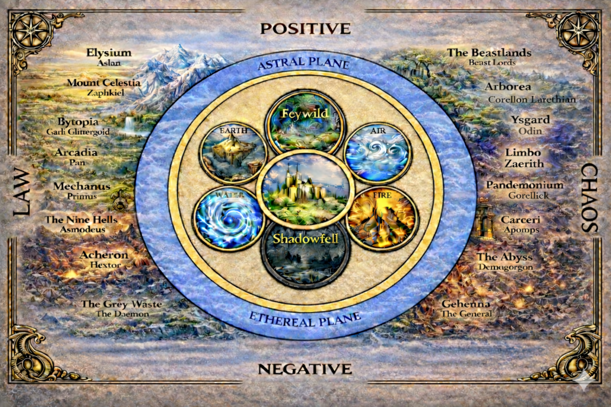

The realm goes beyond the physical. There are worlds within worlds!
The universe of Orvis does not spin in perfect, divine harmony. It is a fractured system, bound together by a volatile and unstable Weave. While the scholars of Argenta debate the exact alignment of the celestial spheres, the reality on the ground is far harsher. The boundaries between worlds are dangerously thin—allowing ancient Fae Lords, indifferent celestials, and unspeakable eldritch horrors to bleed into the mortal realm. To understand the cosmos of Orvis is to realize that humanity is merely surviving on a cracked foundation, looking up at a very dangerous sky.
The gods of Orvis are not the benevolent shepherds found in ancient myths; they are distant, unfathomable entities. Whether they are dead, sleeping, or simply indifferent to the struggles of mortals, they rarely intervene directly in the affairs of the world. Worship in Orvis is less about seeking love and guidance, and more about appeasement, survival, and warding off the horrors of the dark. Those who channel their divine power do so with reverence and fear, knowing that drawing the gaze of a god can be fatal.
The cosmology of Orvis builds upon the foundations of DND's longstanding lore. Each of the outer realms has a monarch that rules over the plane. Access to the outer realms is rare and requires powerful magic. The inner planes aremuch more easily accessed, with gateways to each found readily in across Orvis.

The cosmos is divided into several distinct realms, each bound by its own purpose and laws of reality. At the center lie the Inner Planes, where the Material, Astral, and Ethereal planes coexist in a delicate balance. Flanking the Material Plane are its polar reflections: the vibrant Feywild and the desolate Shadowfell. The Inner Planes are completed by the Elemental Planes, which act as primordial wells of raw power that constantly flow into the material world. Beyond all this lie the Outer Planes. Existing outside the bounds of normal reality, these realms are bastions of pure cosmic energy aligned with forces of positive, negative, law, and chaos. Each Outer Plane is governed by a singular entity of near-divine power, though ruthless contenders constantly vie to usurp these thrones.
The harsh, bleeding center of it all. Home to the frozen wastes of Orvis, the sprawling city of Argenta, and a violently unstable Weave. It is the battleground where mortals fight simply to survive.
The silver void between worlds. It is a haunting, gravity-less graveyard of dead gods, shattered realities, and floating debris where thought dictates movement.
The ghostly overlap. A misty, echoing reflection of the Material Plane where unseen watchers, lost souls, and incorporeal predators stalk the living from just beyond the veil.
A realm of unrestrained, predatory life and overpowering emotion. It is overwhelmingly beautiful, but its Fae Lords are cruel, its bargains are lethal, and time itself is a trap that will steal years from your life.
A desolate void of decay. It is a monochromatic, freezing wasteland where hope goes to die, shadows hunger for warmth, and the undead reign supreme.
A crushing, claustrophobic expanse of shifting stone, jagged crystals, and grinding tectonic plates.
An endless sky of screaming winds, floating debris, and violent electrical storms that can strip flesh from bone.
A raging, choking inferno of magma seas and ash-filled skies. It represents the raw, burning fury of creation and destruction.
A fathomless, crushing ocean with no surface and no floor, filled with primordial leviathans that hunt in the pitch black.
A realm of savage, untamed wilderness where the line between hunter and hunted is razor-thin, and civilization holds no power.
A place of violent passions and towering, oversized wilderness. The beauty is staggering, but the emotions of its denizens run fatally high.
A rugged, freezing battlefield of floating earth-motes where warriors fight to the death daily, only to resurrect at dawn and do it all over again.
A churning soup of pure chaos. Matter constantly shifts, dissolves, and explodes. Casting spells here is a nightmare for the Weave, and surviving it is a test of sheer willpower.
A pitch-black labyrinth of twisting tunnels, constantly echoing with sanity-shredding winds that drive intruders mad.
The ultimate prison. A treacherous string of red-jungle orbs and acidic bogs where escape is nearly impossible and betrayal is the only currency.
A bottomless spiral of chaotic evil. It is comprised of endless, horrific layers ruled by warring Demon Lords who seek only to consume and destroy.
A bleak, volcanic plane of dangerously steep inclines and cruel slopes where nothing is free, mercy does not exist, and survival goes to the most ruthless.
A monochromatic realm of pure apathy and spiritual despair. To exist here is to slowly lose your memories, your drive, your sanity, and eventually, your soul.
An endless, grinding battlefield of massive iron cubes crashing together in the void, filled with brainwashed armies fighting pointless, eternal wars.
A rigid, bureaucratic nightmare of lawful evil. It is ruled by Archdevils who deal in soul-binding contracts, calculated tyranny, and endless, structured torment.
A clockwork universe of turning gears and absolute, emotionless order. Mortals are viewed not as living beings, but as cogs to be calculated, corrected, or filed away.
A realm of militant, regimented harmony. Even the trees grow in perfect geometric rows, and the slightest deviation from the law is swiftly and mercilessly punished.
A dual-layered plane of idyllic labor and wild nature. While outwardly peaceful, the inescapable pressure to conform and produce can slowly unnerve a weary traveler.
A towering, radiant mountain of strict justice and absolute law. To the deeply flawed mortals of Orvis, its blinding perfection is often terrifying.
A bastion of absolute, unyielding Good. It is so overwhelmingly peaceful that travelers often lose the will to ever leave, fight, or struggle again.
The space outside reality. It is an incomprehensible dimension of eldritch horrors, writhing flesh, and non-Euclidean geometry. Even attempting to understand it risks permanent madness.
The gods of Orvis are aloof, granting power to their followers from afar but almost never intervening directly in mortal affairs. We use the standard Faerûn pantheon as a foundation, alongside several custom deities unique to this setting. Below is a full list of available gods, their alignments, and their domains.
The Clockmaker, The Inevitable, The Silver Thread
A cold, unfathomable entity governing the strict flow of time and the finality of death. He is entirely indifferent to mortal struggles, viewing the unstable Weave as a clock running out of sync, waiting to be corrected.